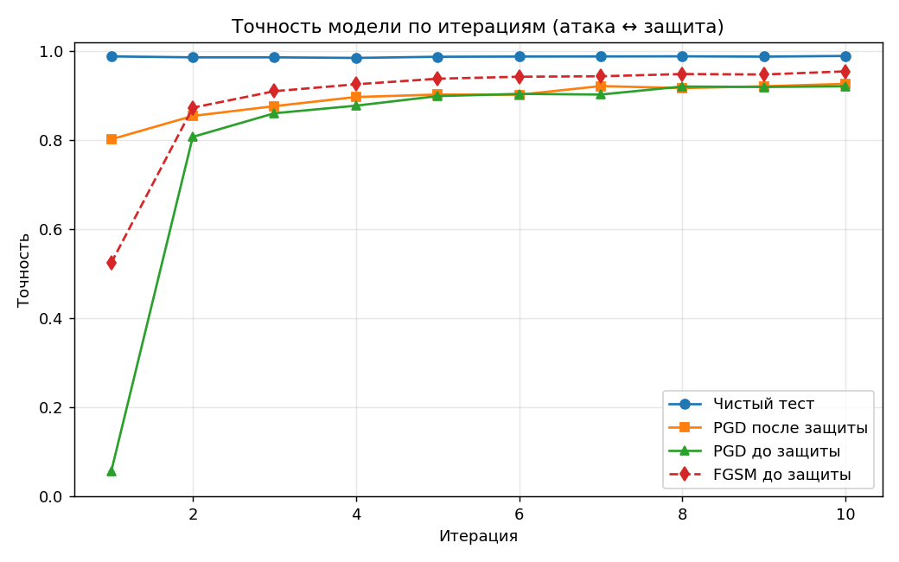
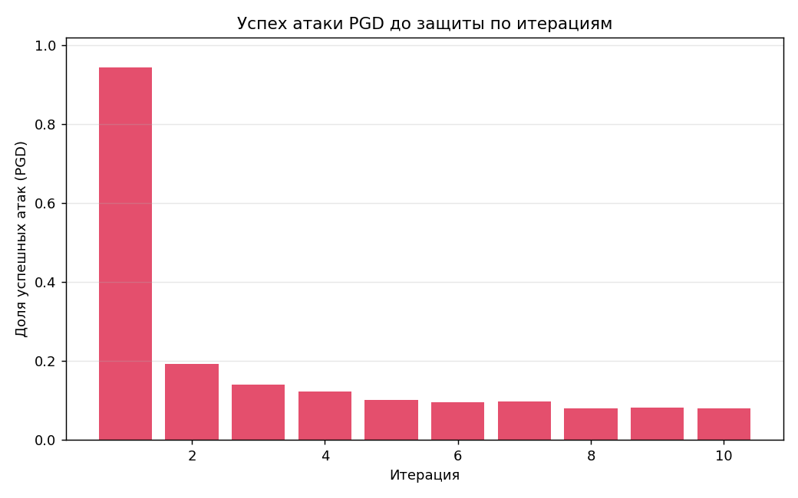
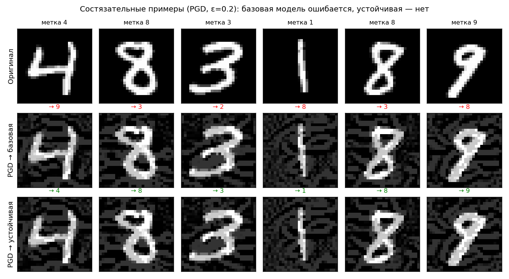
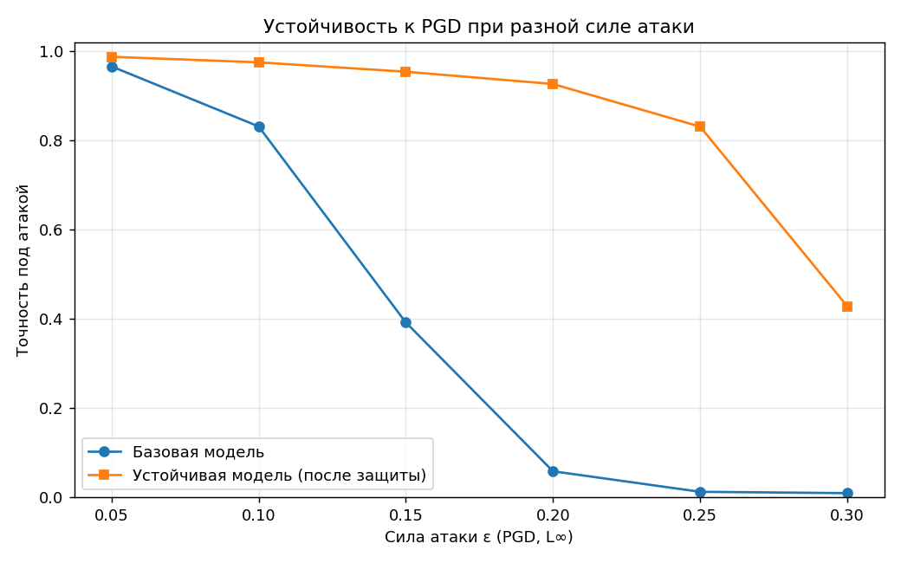

PyTorch · CUDA · ART · MNIST · ONNX
Итеративный состязательный атакователь ML-модели
Проект демонстрирует цикл «атака ↔ защита»: PGD и FGSM атакуют CNN на MNIST, а состязательное обучение постепенно возвращает устойчивость модели.
Задача проекта
Показать, как модель ломается под атакой и становится устойчивее после защиты
На вход подаётся обученная CNN-модель в формате PyTorch .pt.
Атакователь оборачивает её в ART PyTorchClassifier, строит
состязательные примеры и измеряет падение качества. Затем защита выполняет
состязательное обучение на PGD-примерах, которые генерируются заново для
каждого батча против текущих весов.
70 000 изображений рукописных цифр 28×28.
Две свёртки, MaxPool, Dropout, два полносвязных слоя.
Основная оценка устойчивости ведётся PGD при ε = 0.2.
Файл модели для атакующего и экспорт финальной модели.
Результаты эксперимента
10 итераций заметно снижают эффективность атаки
Базовая модель сохраняет высокую точность на чистых данных, но PGD почти полностью разрушает классификацию. После состязательного обучения робастность под той же атакой вырастает до 92.6 %.


Метрики
Финальный прогон
| Итерация | Чистый тест | FGSM до | PGD до | PGD после | Успех PGD |
|---|---|---|---|---|---|
| 1 | 98.76 % | 52.40 % | 5.60 % | 80.15 % | 94.40 % |
| 5 | 98.68 % | 93.75 % | 89.85 % | 90.20 % | 10.15 % |
| 10 | 98.86 % | 95.40 % | 92.05 % | 92.60 % | 7.95 % |

Наглядность
Возмущение почти незаметно, но поведение модели меняется радикально
Состязательные примеры ограничены по L∞-норме, поэтому визуально похожи на исходные цифры. Разница проявляется в предсказаниях: обычная модель уверенно ошибается, а модель после adversarial training удерживает класс.
Эскалация ε
Защита работает в обученном диапазоне и деградирует при усилении атаки
Дополнительный эксперимент сравнивает базовую и устойчивую модели при ε от 0.05 до 0.30. При ε = 0.20 финальная модель даёт 92.6 % против 5.85 % у базовой, но при ε = 0.30 устойчивость ожидаемо падает.

Пайплайн
Модульная архитектура проекта
-
01
Базовое обучение
CNN обучается на MNIST и сохраняется как
models/baseline.pt. -
02
Атака
ART генерирует FGSM/PGD-примеры и считает точность под атакой.
-
03
Защита
PGD-примеры создаются per-batch, модель делает шаг оптимизации.
-
04
Экспорт
Финальная устойчивая модель сохраняется в
.ptи ONNX.
Материалы
Артефакты проекта
Основной текст проекта без использования титульного листа на сайте.
Слайды для защиты с кратким описанием метода и результатов.
Исходный код, скрипты запуска, метрики и сгенерированные графики.